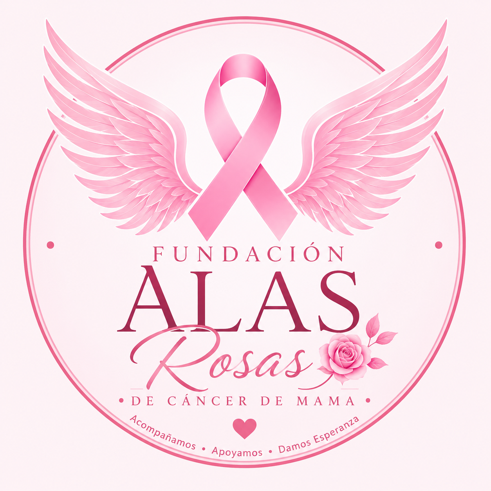

Campaña Octubre Rosa
Realizamos una campaña de concientización durante el mes de octubre para informar sobre la importancia de los controles médicos y la detección temprana.


En Alas Rosas realizamos distintos proyectos para acompañar, informar y contener a mujeres que atraviesan el cáncer de mama. Cada actividad busca generar conciencia, apoyo y esperanza.
Ayudar a nuevos proyectosRealizamos una campaña de concientización durante el mes de octubre para informar sobre la importancia de los controles médicos y la detección temprana.
Organizamos encuentros informativos con profesionales y voluntarios para brindar orientación sobre prevención, cuidado personal y acompañamiento.
Creamos espacios de escucha para mujeres y familias, con el objetivo de brindar apoyo emocional durante momentos difíciles.
Compartimos una jornada abierta a la comunidad donde se entregó material informativo y se explicó la importancia de consultar a tiempo.
Organizamos una colecta para reunir recursos destinados a mujeres que necesitaban ayuda durante su tratamiento.
Sumamos personas dispuestas a colaborar con la difusión, la organización de campañas y el acompañamiento a quienes lo necesitaban.
Muchas personas pudieron conocer mejor la importancia de la prevención y los controles relacionados con el cáncer de mama.
Se logró estar cerca de mujeres y familias que necesitaban contención, escucha y apoyo durante el proceso.
Cada proyecto permitió que más personas se sumaran a la causa y colaboraran con la misión de Alas Rosas.
Los proyectos anteriores nos muestran que la ayuda solidaria puede generar un cambio real. Por eso, seguimos creando nuevas acciones para acompañar a más mujeres y familias.
Sumate a Alas Rosas